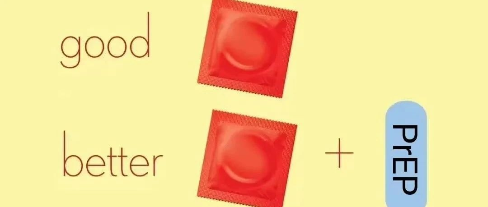

没有提前2小时吃预防药还会有效吗？
爱同行 夕颜
2024年06月07日 20:42
广东
有小伙伴问，HIV预防药使用按需服药的方案，第一次服药只提前了1个小时45分，有效吗？答案是只提前1小时45分没有足够的疗效。
按需服药第一次服药应在性行为前2-24小时内，只有这样，肛门内才能达到足够的药物浓度，起到预防HIV的效果。而女性的阴道内是不能达到的，所以按需服用的方法只适合男男性行为者使用。
这也是我们常说，HIV预防药和安全套不是互为替代品，而是合作关系，同时使用HIV预防药和安全套可以防止另一重预防措施出现漏洞。
就像上面没有按时吃药的例子，安全套能很好的消除晚服药带来的风险。而我们昨天的文章：
用真实的案例告诉你，为什么吃HIV预防药还要戴套
则提示了另几种情况导致的无套。如果提前使用了HIV预防药，就可以大大的减少HIV感染的风险，而不需要采取更贵、吃药更多的HIV阻断方案。